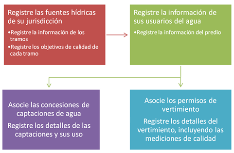
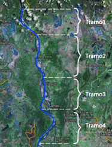

A continuación se describe de forma general, los módulos que constituyen el formulario para el Registro de Usuarios del Recurso Hídrico.

Más adelante se mostrarán sus respectivos formularios y las variaciones para cada tipo de fuente hídrica.
Fuentes hídricas:
Una vez ingrese en el sistema, diríjase al menú Fuentes Hídricas para poder iniciar la identificación de fuentes superficiales y subterráneas en las cuales su entidad ha dado concesiones uso de agua o permisos de vertimiento. El Registro de una fuente Hídrica Superficial incluye una descripción y la definición de Tramos objeto de seguimiento en su entidad y que deberán atender a su Plan de Ordenamiento de Cuencas y/o plan de ordenamiento del recurso hídrico en el marco de lo dispuesto en el decreto 3930 de 2010 y reglamentarios.
Nota: en caso de que una fuente no se encuentre en el Plan de Ordenamiento de Cuencas, debe registrarse al menos un tramo.
La definición de un Tramo se realiza a través de un nombre (Ej. Tramo1), definición del Área, Zona y Subzona hidrográfica en la que se encuentra, y las coordenadas geográficas del punto inicial y final. Es importante mencionar que un tramo no puede definirse entre dos subzonas.
Usuario y predio:
Una vez ha realizado la identificación de las fuentes hídricas de su jurisdicción, usted podrá registrar los Usuarios del Recurso Hídrico. El Sistema le solicitará datos de contacto del usuario del agua (persona natural, jurídica o Empresa de Servicios Públicos) y del predio o sitio donde se hace uso del recurso. Tenga en cuenta que el “predio o sitio”, dependiendo del usuario del recurso hídrico, puede constituir desde una heredad o posesión inmueble con un solo tenedor hasta un terreno con multitud de tenedores (ej. centro poblado o distrito de riego)
Concesiones:
El formulario de concesiones permite la captura de datos propios del acto administrativo en el que se autoriza el uso del agua, el número de resolución y las fechas propias del procedimiento de ley para permitir la captación de agua. Se deben registrar las resoluciones con la que se aprueban planos y las obras, así como la vigencia de la concesión.
Captaciones: El formulario de captaciones permite registrar datos sobre el sistema de captación y sobre ubicación de la misma, ya sea que esté sobre una fuente subterránea, superficial, lluvias, servidas o minerales.
Uso: Una vez se diligencien los datos de las captaciones de un predio, es necesario que se describa el uso del agua que tiene cada captación, estimando el caudal asignado para cada actividad productiva.
Permisos de vertimiento:
La sección de permisos de vertimiento de forma similar, permite registrar datos del acto administrativo con el cual se autoriza el vertimiento de aguas sobre una fuente hídrica o el suelo. Sin embargo, cuando el usuario es una persona natural o jurídica deberá ingresar detalles sobre su Plan de Cumplimiento, y cuando es una Empresa de servicios Públicos deberá registrarse información sobre el Plan de Saneamiento y Manejo de Vertimientos.
Vertimientos: El formulario de vertimiento permite la captura de datos de ubicación del vertimiento en una determinada fuente (subterránea o superficial), sobre el tipo de vertimiento y sistemas de tratamiento existentes
Puntos de monitoreo: De otra parte, el sistema ofrece una sección para identificar los puntos de monitoreo empleados de forma ocasional o periódica para hacer el monitoreo a parámetros de calidad del agua en una fuente hídrica. Se ofrece la posibilidad de registrar puntos de monitoreo localizados en un vertimiento, o puntos de monitoreo localizados sobre una fuente.